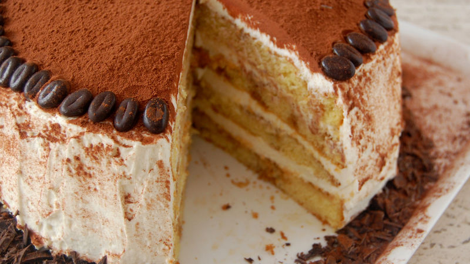

Tiramisu Cake

Description
This might be the first cake you'll pronounce incorrectly the first time, but the coffee in it will surely help you out. We'll know this cake is irresistable, but don't try to eat it too fast! The cake tastes better the longer it sits. This great make-ahead recipe will test your patience and reward you in the end.
Ingredients
- Betty Crocker Super Moist Yellow Cake Mix (box)
- Vegetable Oil
- Eggs
- 3/4 cup hot brewed espresso cofee
- 2 tablespoons cognac
- 2 tablespoons powdered sugar
- 3 containers mascarpone cheese
- 1 1/2 cups of powdered sugar
- 1 teaspoons vanilla
- 1 cup cold whipping cream
- 3 tablespoons Dutch processed
- 3 oz dark baking chocolate, coarsely chopped
Steps
- Heat oven to 350°F (325°F for dark or nonstick pans). Grease bottoms and sides of two (9-inch) round cake pans with shortening or cooking spray. Line pans with cooking parchment paper.
- Make and bake cake mix as directed on box for 9-inch rounds. Cool in pans 10 minutes. Remove from pans to cooling rack; remove parchment paper. Cool completely, about 1 hour.
- In small bowl, mix Coffee Syrup ingredients. Set aside to cool.
- Meanwhile, in large bowl, beat mascarpone cheese, 1 1/2 cups powdered sugar, 2 tablespoons cognac and the vanilla with electric mixer on medium speed until smooth. In small bowl, beat whipping cream with electric mixer on high speed until stiff peaks form. Gently fold whipped cream into mascarpone mixture until combined.
- To assemble, cut each cake horizontally to make 2 layers. Place 1 cake layer cut side up on plate; moisten generously with coffee syrup, then spread with about 1 cup of the filling. Repeat with remaining 3 cake layers. Spread remaining filling over top and side of cake.
- Sift or sprinkle cocoa over cake. Arrange coffee beans around top edge of cake. Sprinkle chopped chocolate around bottom edge of cake. Refrigerate at least 3 hours before serving. Store any remaining cake loosely covered in refrigerator.